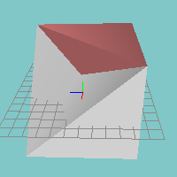
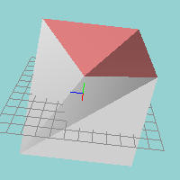
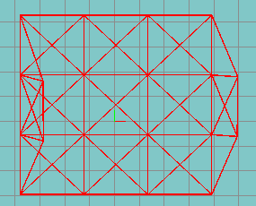
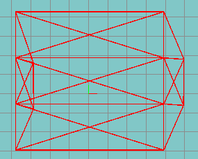
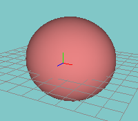

Undo reverses the last operation (if available). The last operation could be the last use of the mouse on a model canvas, the last requested command (except in the case of undo or redo), or a set of changes within one dialog box.
Undo can be used multiple times. The number of undo items available is limited by memory.
Redo reverses the effects of undo (if the preceding operations were undo commands). Redo can be used multiple times.
Copy Selected will copy all selected faces (along with groups and textures) into an internal clipboard. This selection can then be merged with another model using the Paste command.
Paste will merge the selected portion from a previous Copy command into the current model.
Weld Vertices will join selected vertices into one vertex. The vertices must be very close to each other.
More than one set of vertices can be welded at one time. If you have a model which has been duplicated and flipped you can weld the seam between the two portions by moving the seams together, selecting all vertices along the seam, and using a single weld command. Only vertices near each other will be welded so that you can weld the entire seam in one operation.
Vertices can be disconnected again by using the unweld command.
Unweld Vertices will create a separate vertex for each face which uses a vertex.
Vertices can be reconnected by using the weld command.
Snap Vertices Together will move a set of selected vertices to the same coordinates and optionally weld them together. This command has four different behavaiors:
Make Face will create a new face from three selected vertices. You must have exactly three vertices selected for this command to operate.
Select Free Vertices will select all vertices that are not connected to a triangle. Normally vertices are deleted when all triangles connected to them are deleted. The exception to this is any vertex that was created using the Create Vertex tool.
Edge Turn will take two adjacent triangles and rotate the triangles on their shared vertices.
If two triangles use vertices 1 through 4 and the edge between them connects vertices 2 and 4, Edge Turn will rotate the triangles so that vertices 1 and 3 are connected.

Before

After
Edge Divide will split a triangle edge into two edges. Every triangle that uses this edge will be split into two triangles. To use the Edge Divide command, select the vertices at each end of the edge.
Subdivide Faces will divide a triangle face into four triangles which share vertices.
Rotate Texture Coordinates allows you to rotate the texture coordinates of a face or group of faces. If you use the Face version, the texture coordinates are rotated among each vertex of each selected face. If you use the Group version, the texture coordinates are rotated 90 degrees around the center of the material texture.
Align Selected opens a window to move the selected portion of the model so that the minimum, maximum, or center values of a given coordinate axis are aligned along a specified value of the axis. For example, if you have a cube you can use the Align Selection window to align the left or right (minimum or maximum, respectively) side of the cube with the axis (0.0) or any other value for X. The shape of the selected portion of the model remains unchanged.
See the Align Selection Window for more details.
Simplify Mesh combines faces that do not add detail to a shape. This command does not perform LOD reduction.

Before

After
If you have a cube where each side is made up of 8 triangles, then all of these triangles are in the same plane and many edges form a single straight line. In this case, the eight faces on each side can be reduced to two faces. Often when you use a boolean operation to combine two objects you will want to use the simplify mesh command to eliminate unecessary faces from the model.
Cap Holes creates faces to fill in gaps in a mesh. This command can be confused by complex geometry with multiple holes. The best way to deal with more complex shapes is to select only the faces around a single hole at a time.
After using the cap holes command you may need to use the Normals Face Out command to correct the orientation of the new faces.
Spherify opens a window to interactively morph the selected portion of the model into a spherical shape. See the Spherify Window for details.
Invert Normals will cause normals to extend from the opposite plane of selected faces. This is useful if some sections of the model have been manipulated in such a way that polygons are facing the wrong direction.
If you have very dark polygon faces or if some polygon faces don't show up in a different rendering engine, it may be because your normals are facing the wrong direction. In these cases, inverting normals will fix the problem.
Normals Face Out will find triangles in an enclosed mesh that are facing inward instead of outward. If the mesh is not enclosed the behavior is undefined.
Before

After
If you have very dark polygon faces or if some polygon faces don't show up in a different rendering engine, it may be because your normals are facing the wrong direction. In these cases, inverting normals will fix the problem.
Hide will make faces or vertices of your choice invisible. This can be useful if some faces are blocking your view of the part of the model with which you are working.
You can hide the selected portion of the model or the unselected portion of the model. When you are ready to see the complete model again you can select Unhide all to make the invisible portions visible again.
Hidden model portions cannot be selected. Any commands or tools which operate on selected portions of the model will not modify hidden model objects.
Delete removes selected vertices, faces, and bone joints. If a vertex is removed, any faces which rely on that vertex will also be deleted. If a face is deleted which shares vertices with other faces, the vertices and unselected faces will not be deleted. If a bone joint is deleted it will delete keyframes for that bone joint and may cause animation problems for children of the deleted joint.
Delete can be used in Animation Mode to delete a skeletal animation keyframe for selected bone joints.
Flip will move selected vertices and faces so that they face a different direction. You can flip in the X, Y, or Z directions. For example, a Flip X would cause the selected part of the model to change to its mirror image from left to rigth (as viewed from the front or back viewports).
Flatten will move selected vertices so that they share the same coordinate along a specific axis. You can flatten in the X, Y, or Z dimensions. For example, a Flatten X would cause the selected vertices to all have the same X coordinate.
Duplicate creates a copy of the current selection. The old selection is unselected and the new faces will be selected for further manipulation. This is similar to a combined Copy/Paste action.
Extrude takes faces that you have selected and extends them in a direction you specify. When those faces are extended, each edge becomes another face which is connected to the faces' original locations.
There is also an Extrude Tool.
Use the X, Y, and Z text entry boxes to specify how far faces should be offset from their current location. If the "Make Back Faces" option is checked new polygons will be created where the old ones were, but facing the opposite direction (the extruded area will be completely enclosed by the extrusion).
Invert Selection will select unselected portions of the model, and unselect selected portions of the model according to the current selection mode.
If you are in group selection mode, ungrouped faces are ignored and will never be selected.